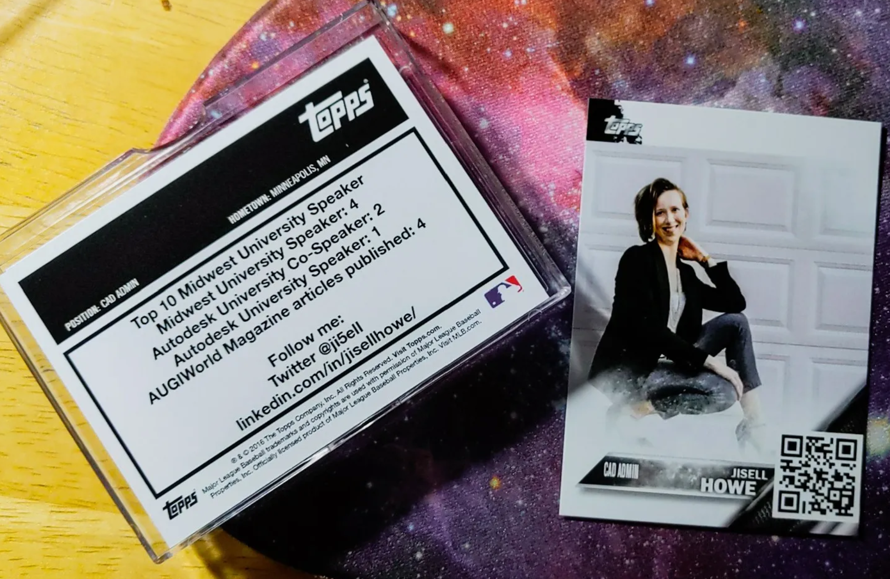

Speaker Trading Cards
Standard Business Cards are “Okay”
In November 2018, I got to thinking about standard business cards and how they really don’t put a name to a face. In my opinion, they are “okay,” but they don’t tell the whole story. Where is the creativity or the “wow” factor to really stand out? Where is the fun?
Let’s Stand Out
From that observation, I came up with an idea to use the idea of Baseball cards but feature conference speakers on them instead. I call them Speaker Trading Cards.
Similar to Baseball trading cards, the stats on the back of a Speaker Trading Card would actually be the number of times you’ve contributed to the industry, whether it is for writing, speaking, you name it. The possibilities are endless.
Yes, you read that correctly. The idea is that the cards feature you as a contributor, not just a specific selection of people. All are welcome to create these cards, and at the end of this page, you’ll find instructions on how to do exactly that.
Speakers aren’t the only ones who can create and use the cards; you could be a writer, a podcast host, and more. Additionally, you don’t even have to be in a specific industry in order to use them. How cool is that?
I originally premiered them at Midwest University 2019. I then introduced the second iteration with a custom QR code at Autodesk University 2019.
I hope to see you create your own cards, and I’m so excited to see what’s next!
Let’s connect in a fun way and support each other as we put pen to paper and step on stage. For some, that might even be the first time! Mentorship matters, and these cards provide a great way to connect those who are new to the game to those who have been in the game for a while.
Ready to make your own?
Step #1: Go to Topps.com/cardbuilder
Step #2: Then, go to the Custom Cards section to get started
Step #3: Next, add image, frame, team, text , and logo. In my case, I added a custom dynamic QR code as the “logo” from the-qrcode-generator.com/
Step #4: Next, add first name, last name, and choose Custom Position for the front of the card. Then, specify your title or anything that suits you!
Step #5: Next, design the back of the card with text and hometown. Add your professional development stats as well! Anything goes!
Step #6: Finally, review and buy cards (20 cards – $9.99).

